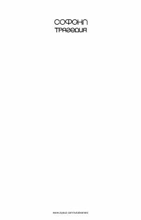

SEQadimgi yunon dramaturgi Sofoklning mashhur "Shoh Edip" tragediyasi.
Ushbu asar qadimgi yunon dramaturgi Sofoklning mashhur "Shoh Edip" tragediyasining o'zbek tilidagi tarjimasidir. Kitobda inson taqdiri, irodasi va o'z qilmishlari uchun mas'uliyati chuqur psixologik tahlil qilinadi. Qadimgi yunon mifologiyasi asosida yozilgan ushbu drama insoniy fojiirarni ochib beradi.